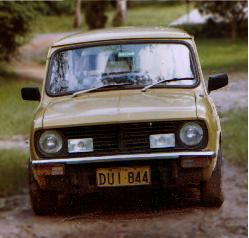
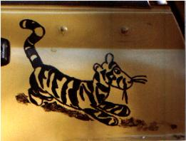
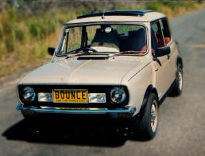
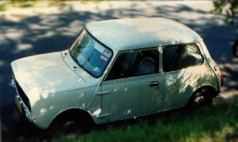
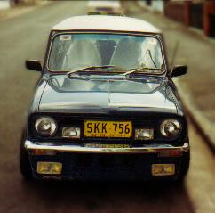
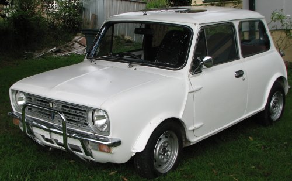

Peter has more than a passing interest in these little cars. First there was Alfalfa, followed by Small (short for Very Small Car). Eric the Half a Mini joined Small as did Alexander Mini and Augustus Mini. Next came Viessy who was named after Very Small Car since he used much of the internals from Small. Some of the other internals came from Augustus and Alexander. Small had BOUNCE numberplates, which Viessy inherited. The BOUNCE numberplates had to go when Peter and Viessy moved up to Queensland. All these were clubman minis. Alfalfa and Small had Tiggers painted on them.
    In 2007 he acquired his second 1275LS
Here's a theme for xpenguins : Minis.tar.gz a cute desktop toy for Linux.